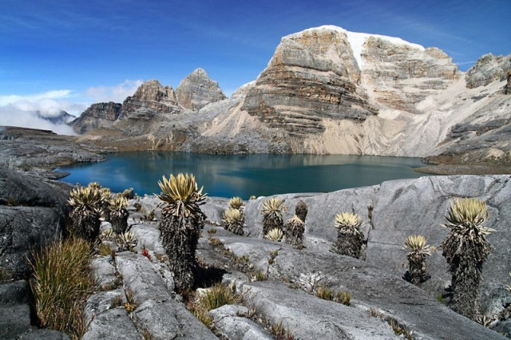

NEVADO DEL CUCUY
El Nevado del Cocuy se encuentra en el Parque Nacional Natural El Cocuy, jurisdicción de los municipios de Güicán de la Sierra y El Cocuy, ubicados en el departamento de Boyacá.
es un gran ñugar turistico para visitar ven y deleitate de las mejores vistas y comidas es un muy buen lugar para compartir en familia
